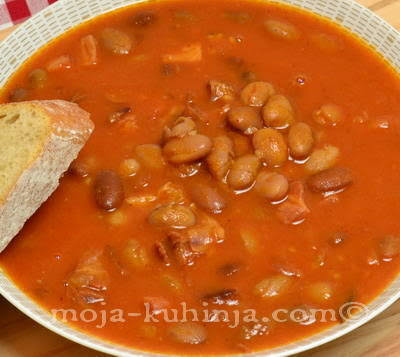

Grah varivo

Sastojci
- 400 g graha
- 1 luk
- 3 režnja češnjaka
- 1 žlica crvene paprike
- 2 lovorova lista
Priprema
- Skuhajte grah dok ne omekša.
- Popecite luk i češnjak na ulju.
- Dodajte papriku, pa sve sjedinite s grahom.
- Dodajte lovor i kuhajte još 20 minuta.